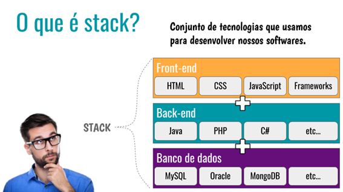
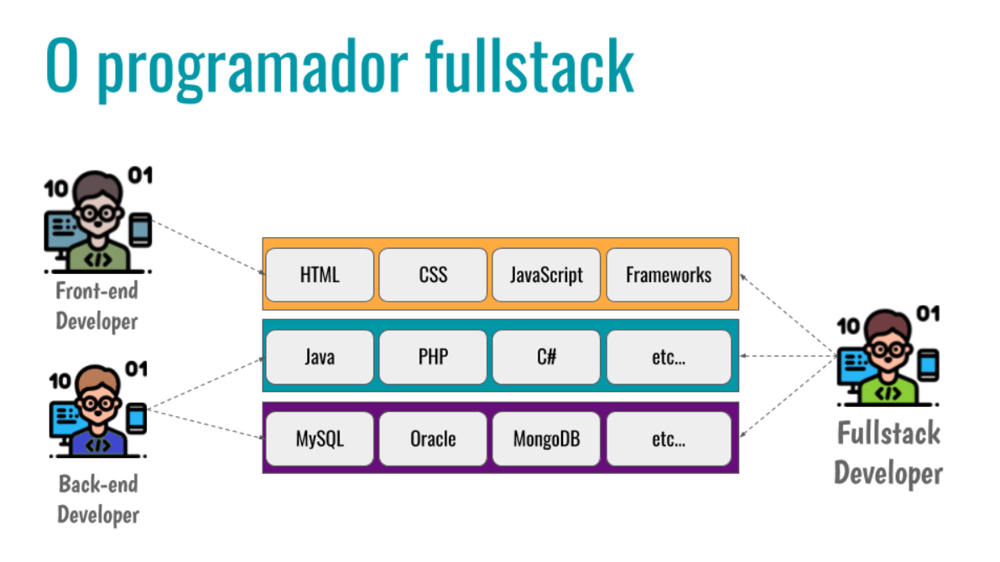
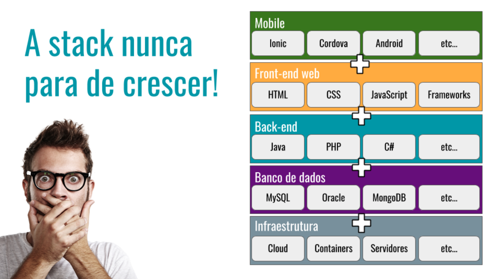

Disciplinas
FUNDAMENTOS DE WEB-T01-2024-2. Concluído
Materiais
Vídeo 3 - Desenvolvimento Web - Desenvolvimento Full Stack sendProf° ministrante: Júlio Cezar Estrela. (UNIVESP)
Conteúdo
Desenvolvimento Full Stack
Roteiro:- O que é Stack
- Desenvolvimento full stack
- O que faz um desenvolvedor full stack
- Vantagens x Desvantagens
- Remuneração de um desenvolvedor full stack
O que é Stack.
https://media.licdn.com/dms/image/v2/C4D12AQGk-eJVqxLVow/article-inline_image-shrink_400_744/article-inline_image-shrink_400_744/0/1623171021319?e=1731542400&v=beta&t=YIG3JjEBiVE5dGzAat6O2idFnsNoNsh6PgZWpis5pko 
https://media.licdn.com/dms/image/v2/C4D12AQEBEg2pbnTiaQ/article-inline_image-shrink_1000_1488/article-inline_image-shrink_1000_1488/0/1623171354085?e=1731542400&v=beta&t=h4xk-6XsoxXNL07cCyHhbiRQt6uZttmhJI4oGfhfxyo 
https://media.licdn.com/dms/image/v2/C4D12AQH8iAAW2I7uCg/article-inline_image-shrink_1000_1488/article-inline_image-shrink_1000_1488/0/1623171469223?e=1731542400&v=beta&t=MvsmaKQDsQ8MT11FGnqPDANj5F4OKbIFjsbrr0WFdRM
Desenvolvimento full stack.
O desenvolvimento full stack envolve toda a pilha de construção de uma aplicação Web
Trata-se de um processo que envolve assuntos multidisciplinares e necessita de profissionais preparados para lidar com tudo ao mesmo tempo (front-end e back-end)
Há um termo para cunhar um profissional multidisciplinar e ele é chamado de T-Shaped
- O T-Shaped é um termo difundido pela Universidade de Harvard e possui muitos significados Base Knowledge/Skills Depth T-Shaped Person
https://i0.wp.com/kevintuck.co.uk/wp-content/uploads/2020/04/imageedit_10_8349219311.png?resize=750,527&ssl=1
A parte vertical do T indica profundidade das habilidades do profissional em determinada área
No eixo horizontal temos os conhecimentos gerais sobre um assunto e também as soft skills, que são as habilidades do cotidiano, como por exemplo: capacidade de se comunicar, saber resolver conflitos da equipe de desenvolvimento, ter empatia, etc.
O que faz um desenvolvedor full stack.
O desenvolvedor full stack é aquele que atua em várias partes do projeto (back-end, front-end, banco de dados) e para isso pode utilizar várias tecnologias.
Como o projeto de uma aplicação Web envolve front-end e back-end há profissionais que atuam em uma dessas frentes, mas há também aqueles que atuam em ambas
Um desenvolvedor full stack deve "navegar" no universo front-end e back-end
Deve saber entre outros pontos:
- Lidar com libs e frameworks JavaScript
- Controle de versão
- Saber fazer design responsivo
- Lidar com APIs
- Gerenciar banco de dados
- Compreender de um modo geral as tecnologias front-end – pois permite comunicar-se bem com as equipes de desenvolvimento
- Domínio de linguagens que fazem parte do projeto (Python, Ruby, PHP, por exemplo)
Vantagens x Desvantagens.
Vantagens- Pode trabalhar melhor em pequenas equipes em que há menos postos de trabalhos para desenvolvedores
- Pode resolver diversos problemas de uma única vez
- Sabem se comunicar com os desenvolvedores front-end e back-end
- Falta de especialização
- Dificuldade de priorizar projetos
- Empresas pensam no profissional full stack para economizar com especialista no front-end e no back-end
Remuneração de um desenvolvedor full stack.
Um bom desenvolvedor full stack tem remuneração que varia de R$ 4.000,00 à R$ 8.000,00 Profissionais seniores podem receber até R$ 15.000,00 Fonte:
https://ezdevs.com.br/salario-para-desenvolvedores-em-2021/Assim como ocorre com profissionais do front-end e back-end, as oportunidades podem ser para as categorias:
- Full Stack Jr
- Full Stack Pleno
- Full Stack Senior
Ambos acima no modelo CLT (Consolidação das Leis do Trabalho) ou PJ (Pessoa Jurídica)
Referências:
- 1.https://www.devmedia.com.br/quem-quer-ser-um-programador-fullstack/38786
- 2.https://www.proway.com.br/blog/dev-full-stack-o-que-e-isso
- 3.https://itacademy.harvard.edu/faq/what-t-shaped-professional
- 4.https://movile.blog/desenvolvimento-full-stack-o-que-significa-ser-um-profissio nal-completo/
- 5.https://blog.betrybe.com/desenvolvimento-web/full-stack/
- 6.https://blog.geekhunter.com.br/desenvolvedor-full-stack/